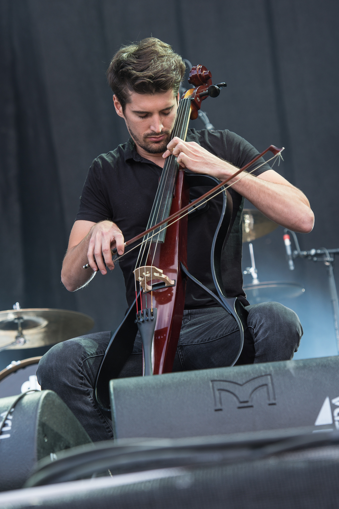

2CELLOS
A 2CELLOS 2017. március 17-én egy dinamikusabb hangzásvilággal rendelkező THE SCORE című albumot jelentetett meg. Az albumon meghallgathatjuk az elmúlt évek legismertebb film slágereinek feldolgozását. A zenészek világkörüli turnéra indultak 2017. júliusában és nagy örömünkre Budapest is állomása turnéjuknak. 2017. december 16-án, a Papp László Sportarénában meghallgathattuk a csellisták vadonatúj klasszikus zenei átdolgozásait 12 fős vonós zenekar kíséretében, amelynek köszönhetően nem csak egy hagyományos koncertet, hanem egy showműsort láthatunk a színpadon, komoly színpadi rendezéssel.
A két horvát csellista 2011-ben vált ismertté, amikor Michael Jackson "Smooth Criminal" című számának feldolgozásával berobbant a köztudatba. Luka Šulić és Stjepan Hauser egy új, energikusabb albumot hozott létre a Sony Music Masterworks közreműködésével. A THE SCORE album hagyományosabb hangvilágot képvisel, illetve a Londoni Szimfonikus Zenekar játszik az albumon Robin Smith (karmester/rendező) vezénylésével.
Az albumot a világhírű zeneszerző, Ramin Djawadi Trónok Harca c. sorozat melódiája nyitja meg, aztán a filmtörténet Oscar-díjas slágereit hallhatjuk az albumon, mint például:- James Horner szerzeménye, a "My Heart Will Go On", a Titanic főcímdala
- John Williams Schindler listája főcímdala
- Vangelistől a Tűzszekerek főcímdala: Chariots of Fire
- "For the Love of a Princess" a Rettenthetetlen c. filmből
- Gyűrűk Ura filmslágere a "May It Be"
- "Now We Are Free" c. dal a Gladiátor c. filmből
- Luka Sulic 
- Sulic a neves londoni Royal Academy of Music, Hauser pedig a manchesteri Royal Northern College of Music zeneakadémián végzett. Sulic számos kiemelt nemzetközi nagyversenyen ért el élvonalbeli helyezést, többek között Varsóban a VII. Lutoslawski Nemzetközi Csellóverseny első helyét és különdíját (2009), a European Broadcasting Union "Új tehetség" versenyének első helyét (2006) és a Royal Academy of Music támogatói díját a Wigmore Hallban (2011).
- Stjepan Hauser
- Hauser több elismert komolyzenei előadó, mint például Mstislav Rostropovich, Bernard Greenhouse, Mennahem Pressler és Ivry Gitlis társaként is zenélt. Országos és nemzetközi zenei versenyeken 21 első helyezést ért el, kétszer játszott Charles hercegnek a Buckingham és a St. James Palotában.

Albumok
- 2Cellos
- In2ition
- Celloverse
- Score
2CELLOS |